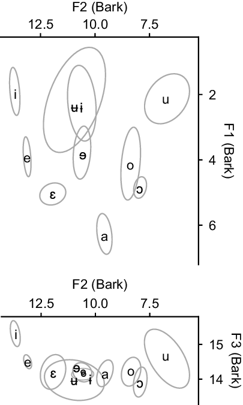
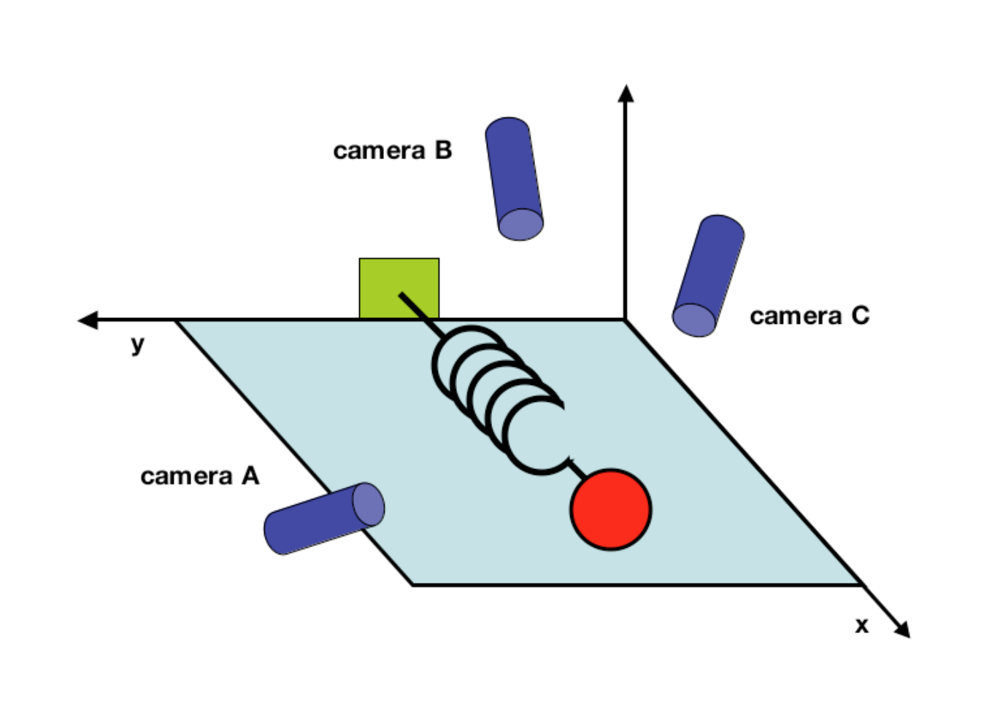
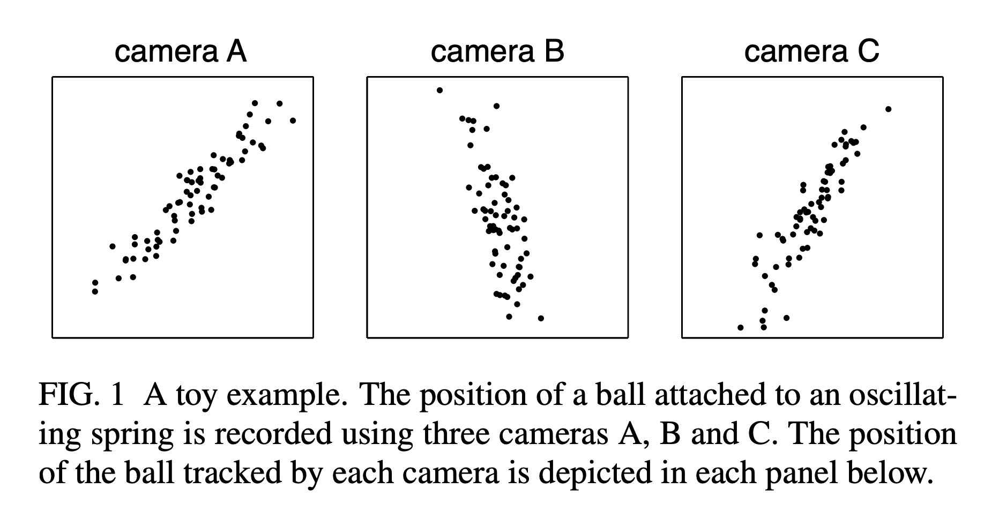
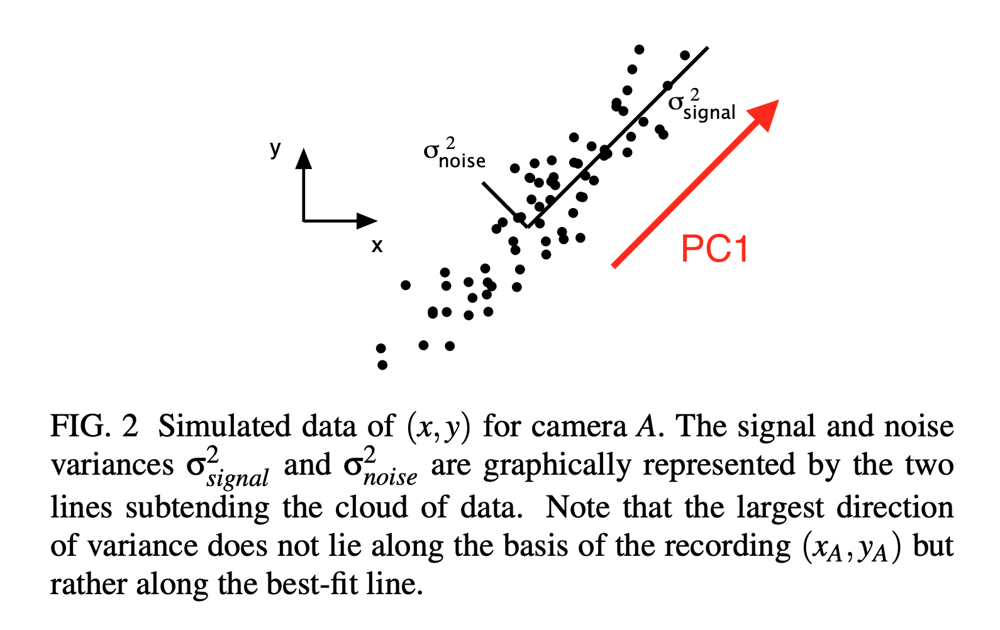
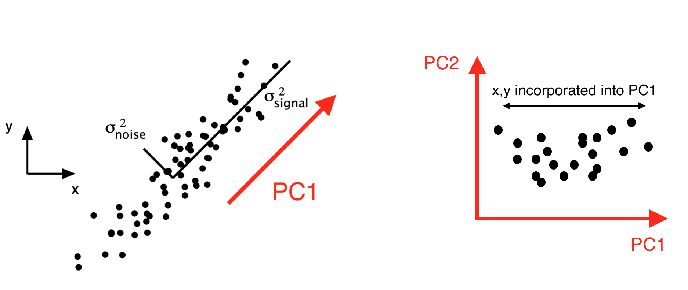

NTU lectures (2)


Matthew Faytak
University at Buffalo

In the previous lecture, we discussed feature selection
Here, we will discuss feature extraction
Some different motivations underpin feature extraction: data-driven rather than theory-driven
Features (observable attributes) define dimensions in a data set

If we have 1,000 features (dimensions) per observation, why not just use all of them? The curse of dimensionality 😈
Adding many dimensions exponentially increases the amount of space that needs to be covered, with numerous undesirable side effects Bellman (1957); Keough & Mueen (2011)
Distance in very high-dimensional spaces becomes nonsensical Aggarwal et al (2001)
Converts a high dimensional space consisting of numerous features into a lower dimensional space consisting of fewer features Vlachos (2011)
Technically, feature selection is also a way of reducing dimensionality Liu (2011), Vlachos (2011)
We are focusing today on feature projection
Avoids high dimensionality 😈, and also presents a useful complement to feature selection
Consider a ball on a spring from Shlens (2014)

Measurement ends up being in terms of arbitrary dimensions which are not the simplest, best way to describe the system

Data often contains lots of covariation: measures are not totally independent; can vary systematically together
PCA finds a new set of orthogonal dimensions which capture the most variance (and the least noise)
 Shlens (2014)
The previous slide showed PC1 for two-dimensional data; imagine PCA in many more dimensions, which is more typical
New basis comes from rotation and rescaling of original data in high dimensions (see next slide)
PCs are a particular sort of eigenvector
The amount of variance in the original data explained by each eigenvector is its eigenvalue
The data can then be projected from the “naive” basis (the features originally measured) into a new basis
Result: positions in new “PC space”

We’ve skipped over the linear algebra that underpins PCA, for now
Some further reading on the linear algebra:
Other reading:
We now switch to our first Python notebook to demonstrate how to do PCA 👩💻🧑🏾💻👩🏻💻
Using acoustic data on phonation from Keating et al. (n.d.)
Extracted/projected features can speed analysis
Improvements to research workflows
Dimensionality reduction can aid data visualization, sometimes even making it more intuitive
Not theory-driven, which may pose liabilities
New n-dimensional space may not be so easy to interpret: what does a dimension “mean”?
The second major thread of these lectures: ultrasound as a method
Aggarwal, C., Hinneburg, A. & Keim, D. (2001). On the surprising behavior of distance metrics in high dimensional space. In International Conference on Database Theory 2001, 420-434. Springer. PDF
Bellman, R. (1957). Dynamic Programming. Princeton University Press.
Faytak, M. & Akumbu, P. (2021). Kejom (Babanki). Journal of the International Phonetic Association, 51(2), 333-354. DOI
Jolliffe, I. (2002). Principal component analysis (2nd ed.). Springer series in statistics. New York: Springer.
Keating, P., Kuang, J., Garellek, M., Esposito, C. & Khan, S. (n.d.) A cross-language acoustic space for phonation distinctions. Unpublished manuscript, UCLA. PDF
Keogh, E. & Mueen, A. (2011). Curse of dimensionality. In Sammut, C. & Webb, G. (eds.), Encyclopedia of Machine Learning, 257-258. Springer.
Liu, H. (2011). Feature selection. In Sammut, C. & Webb, G. (eds.), Encyclopedia of Machine Learning, 402-406. Springer.
Nguyen, L. & Holmes, S. (2019). Ten quick tips for effective dimensionality reduction. PLoS Computational Biology, 15(6), e1006907. DOI
Shlens, J. (2014). A Tutorial on Principal Component Analysis. arXiv
Vlachos, M. (2011). Dimensionality reduction. In Sammut, C. & Webb, G. (eds.), Encyclopedia of Machine Learning, 402-406. Springer.
Zhang, X. (2011). Covariance matrix. In In Sammut, C. & Webb, G. (eds.), Encyclopedia of Machine Learning, 235-238. Springer.